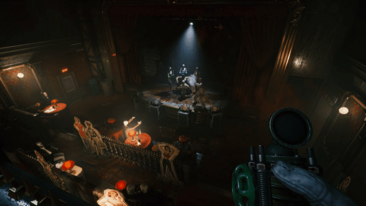
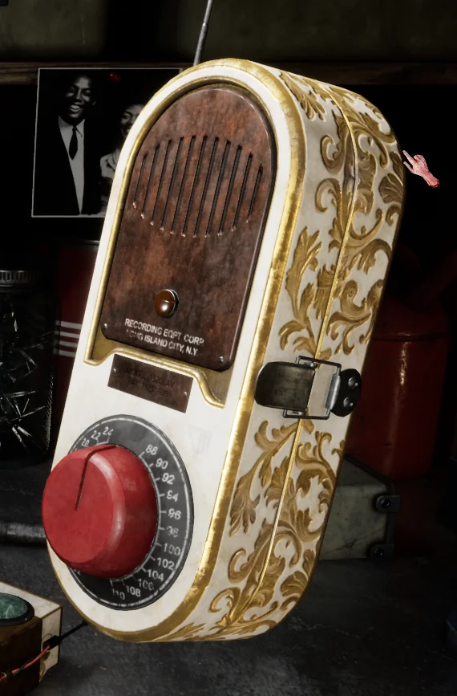
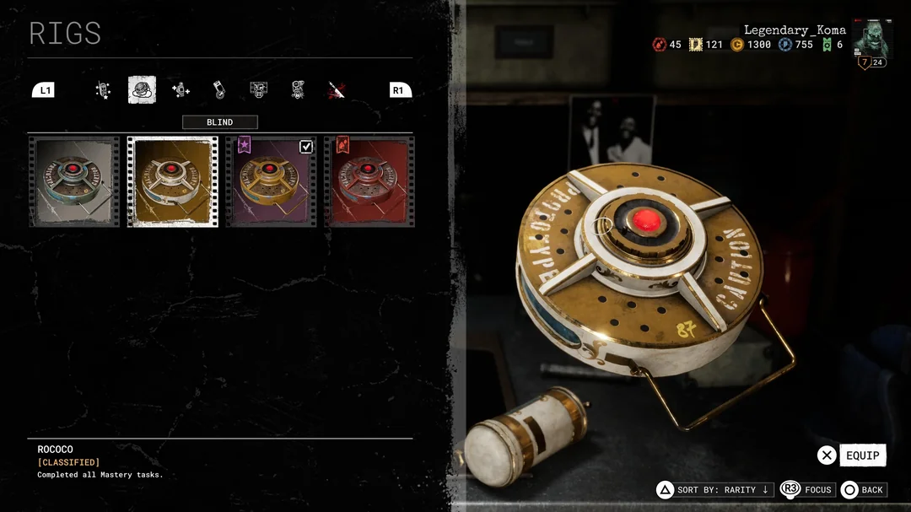
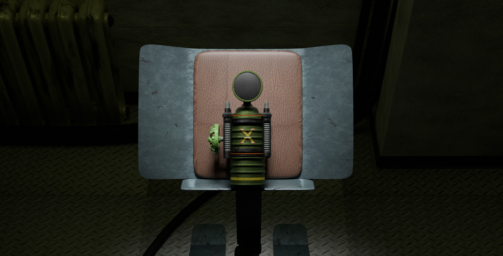
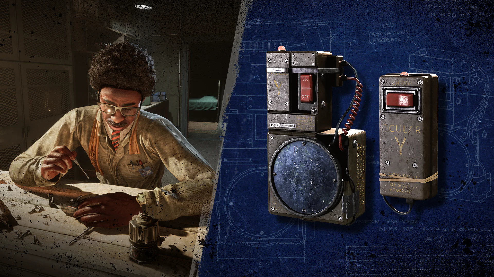
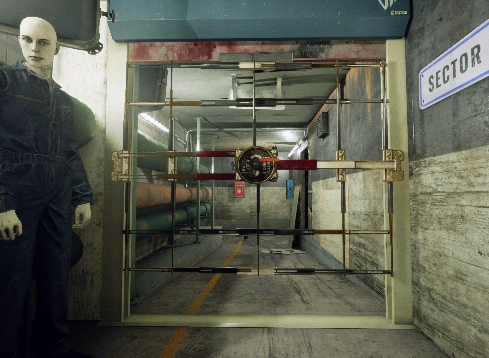
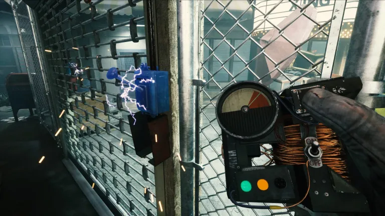

Stun Rig
A_MP · Throwable
A throwable device that stuns most Ex Pops and Prime Assets for several seconds when fully upgraded, buying time to escape or reposition. Works on Imposters but not the Jaeger.
Sinyala Facility Handbook
Reusable tools and field equipment for surviving a Trial.


Rigs are reusable tools issued by MK.Corp, worn on your chest device (E.S.O.P.) and recharged over time. Choose your loadout based on the Trial ahead.

A_MP · Throwable
A throwable device that stuns most Ex Pops and Prime Assets for several seconds when fully upgraded, buying time to escape or reposition. Works on Imposters but not the Jaeger.

Chem_Blinder · Mine
A deployable smoke mine enemies who walk through the smoke can't see out of it. Berserkers, Jaegers, and Imposters are immune to the blinding effect, so it's less reliable against them.

Med. N_Oxide · Support
Releases a healing gas that restores health and sanity to anyone standing in it, including teammates. Makes noise until upgraded with Silent Help, so it can give away your position if used carelessly.

Human_Spec · Utility
Temporarily lets you see enemies, teammates, items, and objectives through walls and floors. Excellent for scouting a room or a Prime Asset's location before committing to a path.

Block Aid · Defensive
Places a temporary barricade on a door to slow enemies trying to break through. Most useful on objectives that lock you in one room for an extended time.

Wireless Jammer · Utility
Disables electronic traps and devices and can instantly unlock padlocked containers and doors. Widely considered one of the strongest all around Rigs for its versatility.